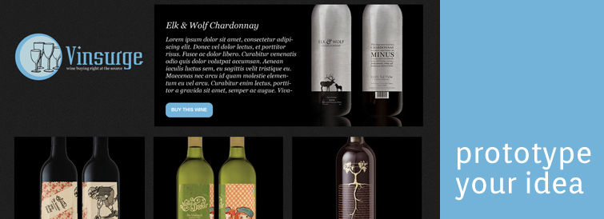
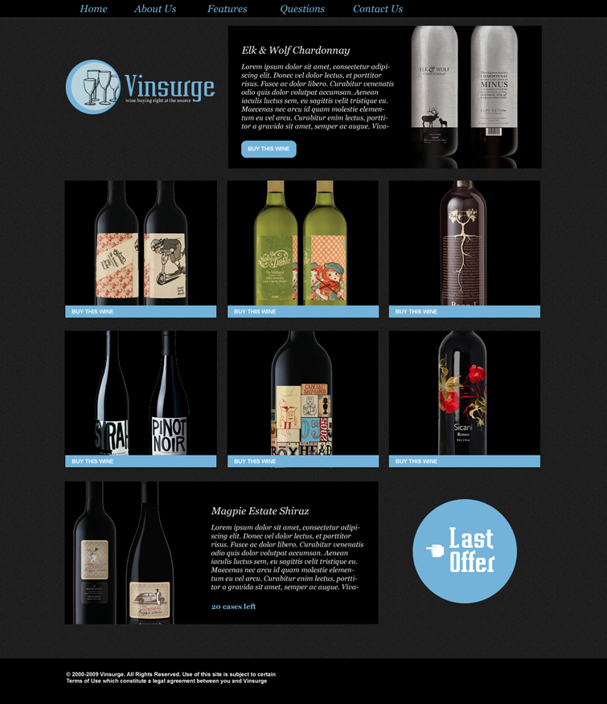

Articles

Prototype Your Idea
Have you ever had a really innovative idea for an iPhone or web app? Instagram is a great example of a simple idea for an app that was built around sharing photos. Anyone could have easily thought of this, and guess what? It sold for $1billion to Facebook! Apps may look really simple, but taking the idea for one to conception takes an extreme amount of thought, manpower, capital and hours to build. It's big business to build an app and the reality is that not all apps are successful. What if you could simply test or prove your concept visually, for a fraction of the cost to build it? Prototypes can better explain your idea or vision, without risking a loss. That's where we come in. Consider us the insurance brokers, but you get more for your money with what we're selling.
Prototypes are a visual display of your idea, and can be very simple designs or interactive tools. We've done many prototypes for startups that want to have something to show to investors, or use to conduct user tests to see if its worth spending their time and capital. Here's a few examples of ways we can create a visual sample of your idea:
1. Create basic sketches or wireframes to get ideas down on paper2. Use an online service to craft some interactive wireframes
3. Build some working prototypes in css/html for user testing
4. Demonstrate look and feel using high fidelity design mockups
5. Deliver Design Mockups that are interactive for user testing
What you want to do is prove the concept to whomever your audience is - be that yourself, or an investor.
Example
Here was a great idea that Chris Gillis Design and an unnamed associate had that was brought to the visual prototype stage. The prospective app was named Vinsurge.
The Basic Concept: The Best Wine Deals advertised on a daily basis, accessed through an online website, as well as through email. The app also had a social networking component.
What we did: We designed branding, wireframes and a homepage mockup. The prototype allowed us to sit with the idea, show it to investors and begin to process how his idea would work. It was then revealed to a few users that are interested in wine, and helpful feedback was given.
How this was useful:
1. They were able to see the idea in a physical form for very little money2. They were able to take this idea to the next level by having something to show potential investors
3. Potential consumers could then give feedback to see if there was a market for his idea
The verdict: The client came to the realization that the idea was a great one, but the amount of manpower and capital upfront to get everything in place was too profound. In addition to this, when potential users got a peek, it was discovered that outstanding quality was of more value than price in the present market.
© 2017 Chris Gillis Design All Rights Reserved.